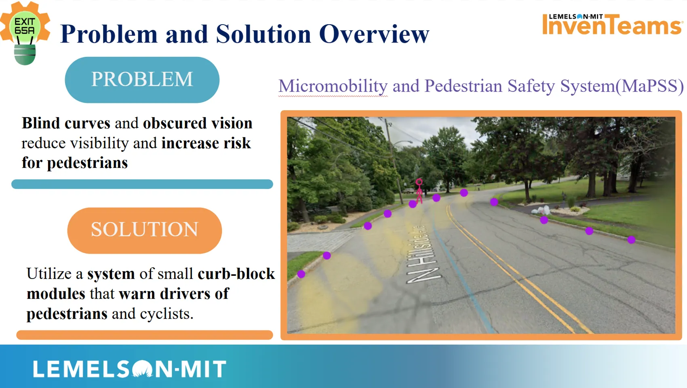
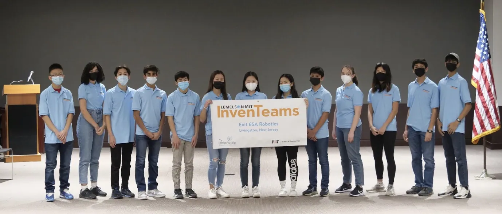

MaPSS — Pedestrian Safety System.
Developing a curb-integrated warning system that detects approaching vehicles and gives pedestrians and cyclists a more visible safety cue.


The problem
Our team explored ways to improve awareness at road crossings, especially where drivers and vulnerable road users need a clearer indication of approaching traffic. We designed MaPSS as a curb-integrated system that uses sensing and lighting to communicate in the street environment.
System architecture
The concept combined radar-based vehicle detection, microcontrollers, wireless radio communication, dynamic LED warning lights, and solar/battery-powered curb modules. The system required coordinated mechanical, electrical, and embedded-software design.
My mechanical and leadership contributions
As a technical lead on a 13-person team, I helped integrate the sensing and electronics into a rugged physical product. The design work included HDPE enclosure concepts, a polycarbonate cover, component packaging, environmental protection, and maintainability. We iterated on how the modules could be installed at the curb while protecting the internal hardware.
Testing and presentation
Preliminary field measurements recorded vehicle speed changes from 31 to 24.9 mph during daytime testing and 23.3 to 18 mph during nighttime testing. These were limited project observations, not proof of a generalizable traffic-safety effect. We presented the system at Lemelson-MIT EurekaFest, sharing both the prototype and the design process.
Photo gallery
Browse the full set of available photos. Click any image to enlarge it; use the arrows to move through the gallery.